.jpg){kind=link}


,_Cape_Peninsula_National_Park,_Cape_of_Good_Hope_--_2024_--_3276.jpg){kind=link}


.jpg){kind=link}


,_Table_Mountain,_Blick_auf_Lion%27s_Head_--_2024_--_2761.jpg){kind=link}


.jpg){kind=link}

Cape Town
Victoria & Alfred Hotel
A hotel at Cape Town's V&A Waterfront, offering rooms in a historic setting with views of the harbour and Table Mountain from the property.
Check roomsOfficial hotel website · opens in a new tab
Africa / A place to get to know
Cape mountains, wildlife country and stories that shape a nation

Welcome to South Africa
South Africa brings together Cape coastal scenery, inland wildlife reserves and cities shaped by many communities. Cape Town's neighbourhoods and museums offer a close view of cultural life and the country's difficult, changing history.
Explore a little further
Landmarks, landscapes and the stories behind them. Select a photograph for a closer look.
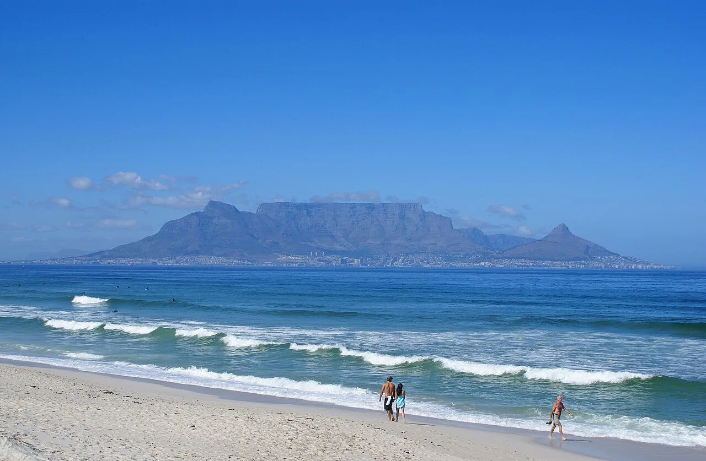
Cape Town's flat-topped mountain rises above the city and Table Bay. Its slopes and summit form part of Table Mountain National Park, with distinctive fynbos vegetation and expansive views.
Danie van der Merwe from Cape Town, South Africa · CC BY 2.0 . Resized as needed and converted to WebP. No crop.
On the slopes of Signal Hill, Bo-Kaap is known for colourful houses and longstanding Muslim communities. The neighbourhood's architecture, mosques and food traditions reflect Cape Town's layered social history.
Daniel Case · CC BY-SA 3.0 . Resized as needed and converted to WebP. No crop.
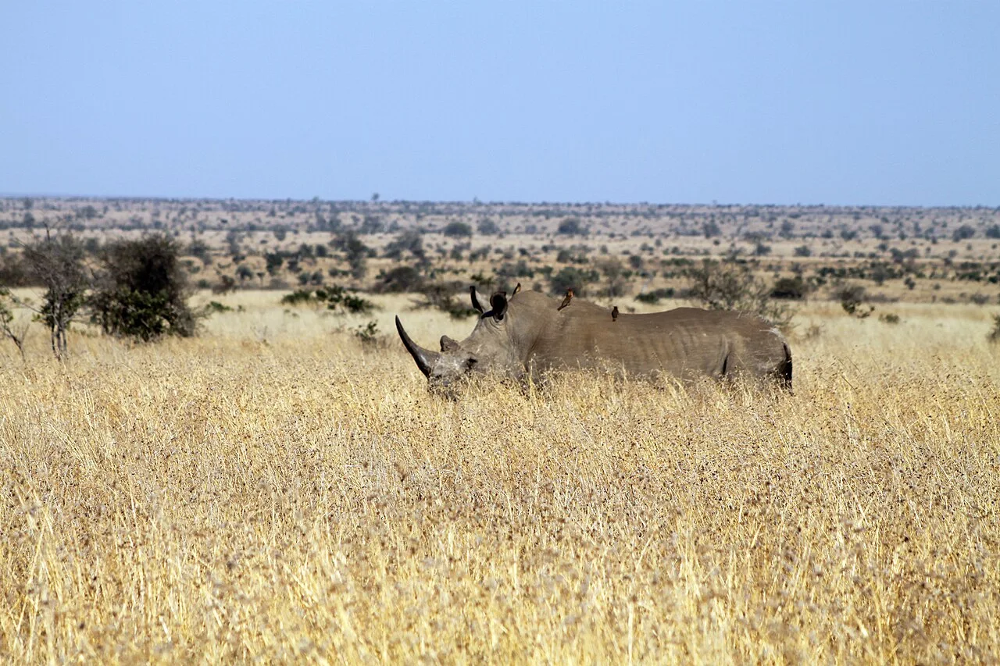
In northeastern South Africa, Kruger protects extensive savannah landscapes and a wide variety of wildlife. Its network of roads, camps and guided experiences introduces different habitats across the park.
flowcomm · CC BY 2.0 . Resized as needed and converted to WebP. No crop.
Across Table Bay from Cape Town, Robben Island is closely associated with political imprisonment under apartheid. Nelson Mandela was among those held here, and its museum interprets the island's history.
White House Television crew · Public domain . Resized as needed and converted to WebP. No crop.
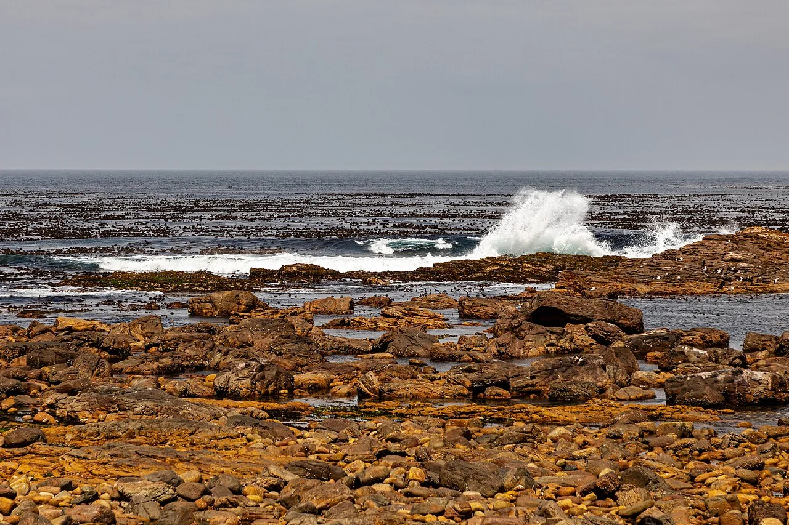
This rocky headland lies within Table Mountain National Park on the Cape Peninsula. Coastal paths, fynbos and wildlife surround a landscape long associated with maritime journeys around southern Africa.
Dietmar Rabich · CC BY-SA 4.0 . Resized as needed and converted to WebP. No crop.
Explore a little further
Cape Malay food traditions and the Cape Town Minstrel Carnival reflect the city's layered heritage. The District Six Museum preserves memories of a community displaced by apartheid's forced removals.
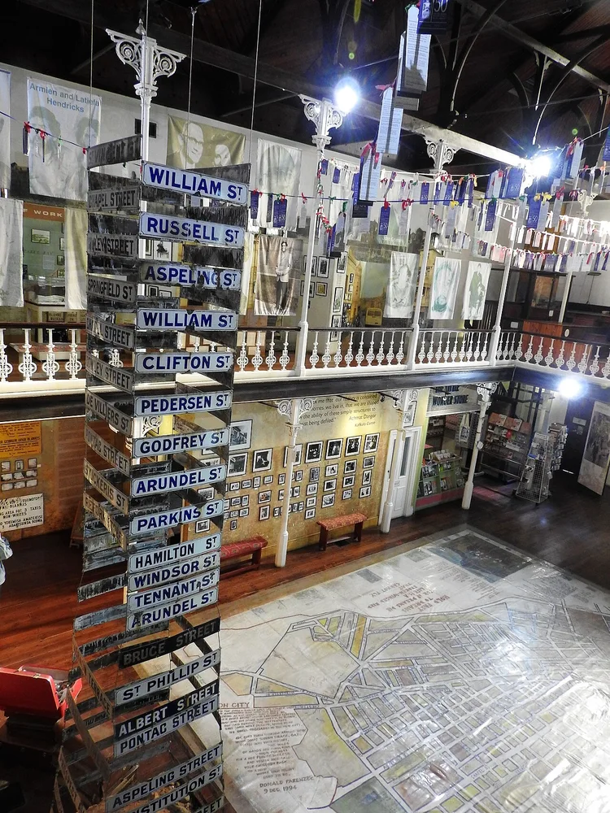
District Six Museum
Jim.henderson · CC BY-SA 4.0 . Resized as needed and converted to WebP. No crop.
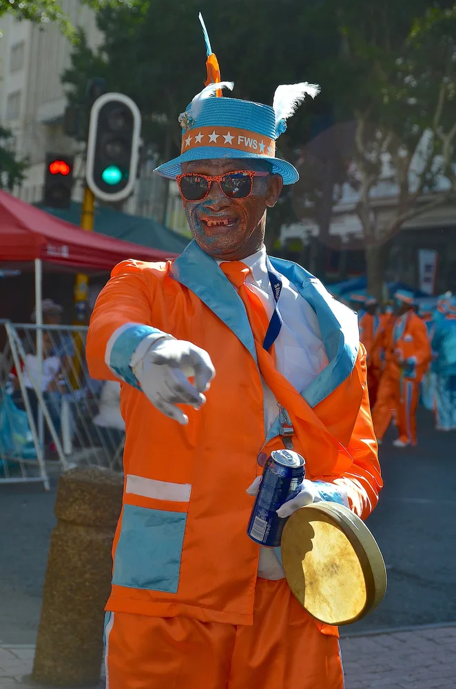
Cape Town Minstrel Carnival
Olga Ernst · CC BY-SA 4.0 . Resized as needed and converted to WebP. No crop.
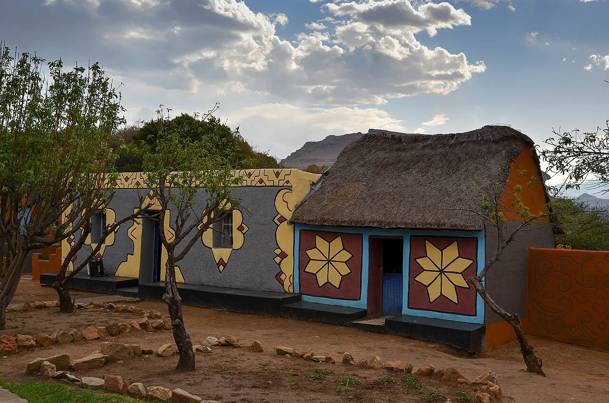
Basotho Cultural Village
Pavel Špindler · CC BY 3.0 . Resized as needed and converted to WebP. No crop.
Explore a little further
South African food includes Cape spiced dishes, Durban curries and the shared cooking traditions of the braai.
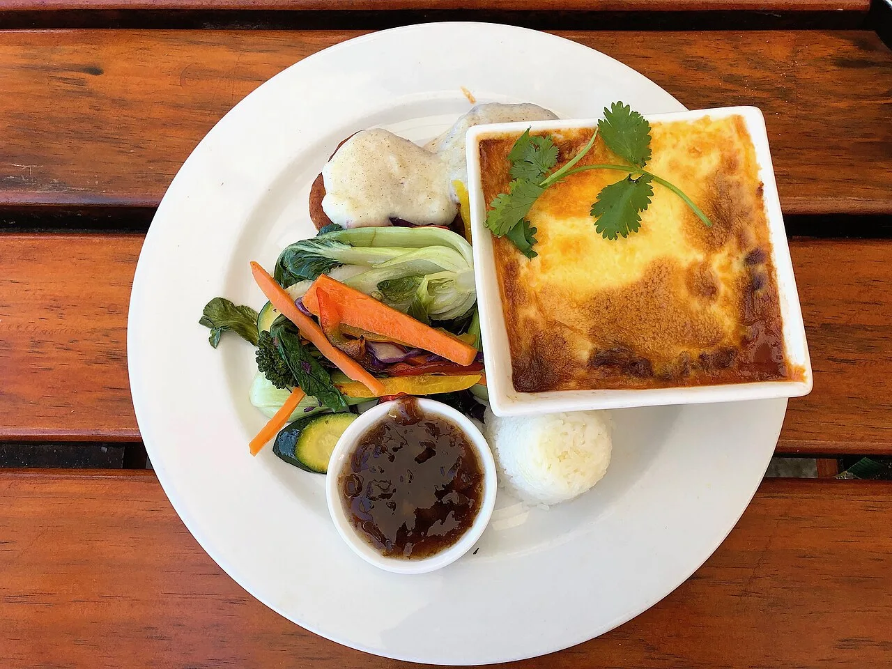
Bobotie is a baked dish of spiced minced meat topped with an egg custard.
Olga Ernst · CC BY-SA 4.0 . Resized as needed and converted to WebP. No crop.
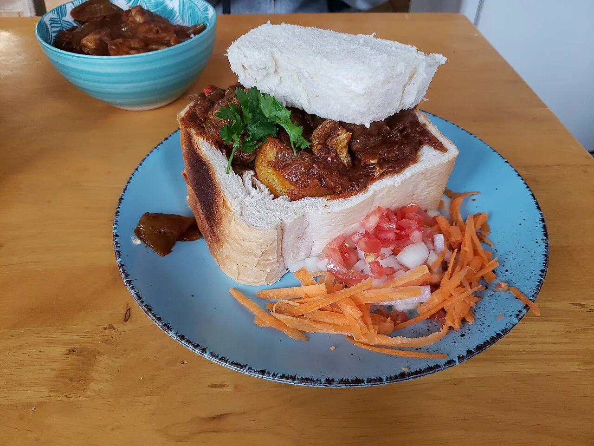
Bunny chow serves curry inside a hollowed-out loaf of bread, a speciality associated with Durban.
Andy Li · CC0 . Resized as needed and converted to WebP. No crop.
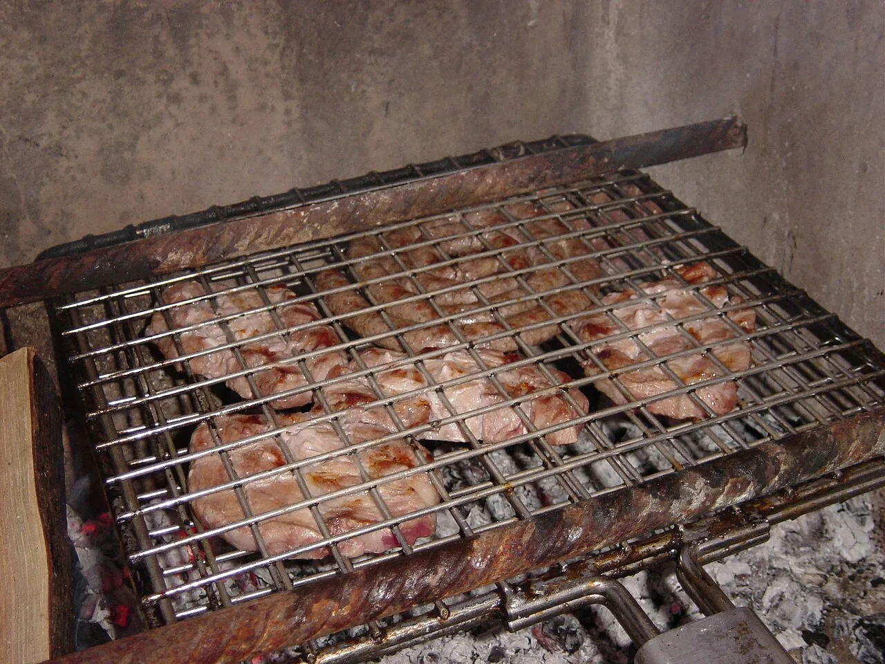
Boerewors is a coiled spiced sausage, commonly cooked over a braai.
Conrad88 at English Wikipedia · CC BY-SA 3.0 . Resized as needed and converted to WebP. No crop.
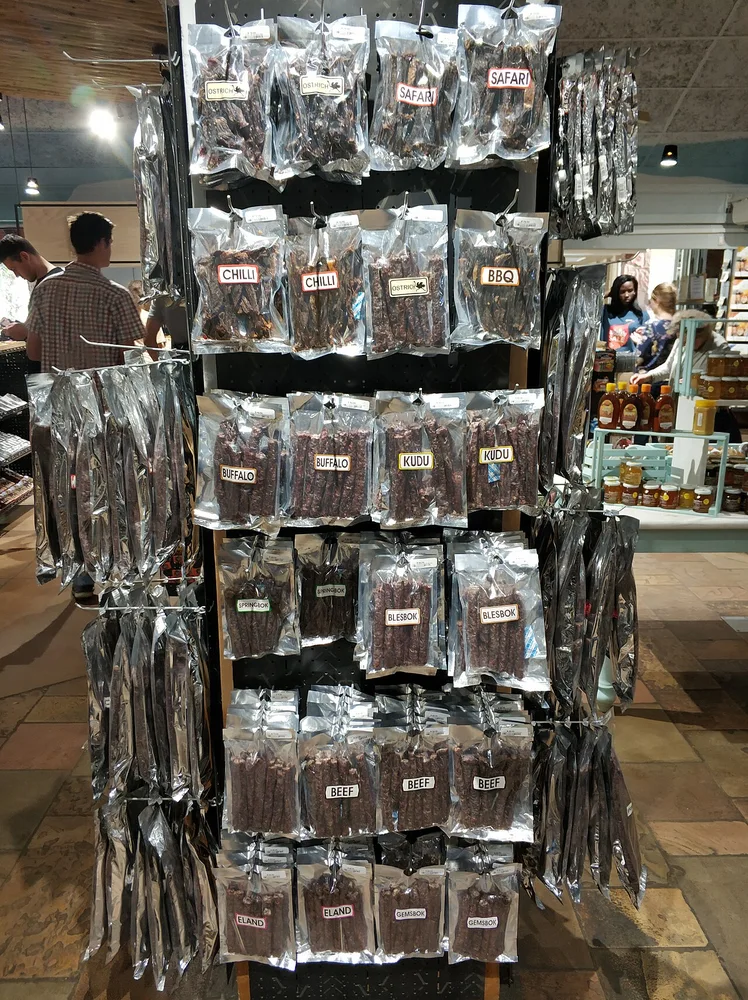
Biltong is seasoned meat preserved by air-drying and usually eaten in thin slices.
Marcmiquel · CC BY-SA 4.0 . Resized as needed and converted to WebP. No crop.
Explore a little further
Mountain viewpoints and the Cape Peninsula's coastal roads offer several ways to explore Cape Town's landscape.
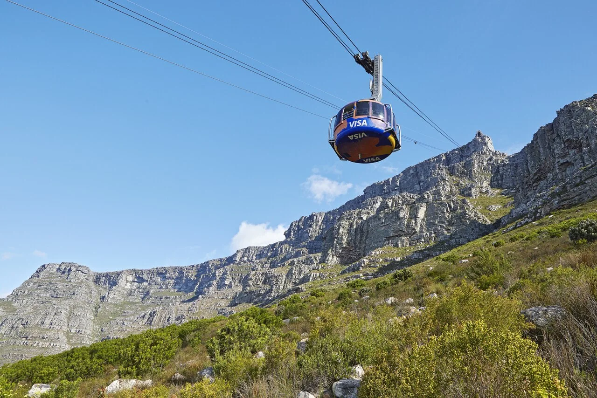
Ride the cableway to explore summit paths and views over Cape Town and Table Bay when weather and operating conditions permit.
Fazielah Williams · CC BY-SA 4.0 . Resized as needed and converted to WebP. No crop.
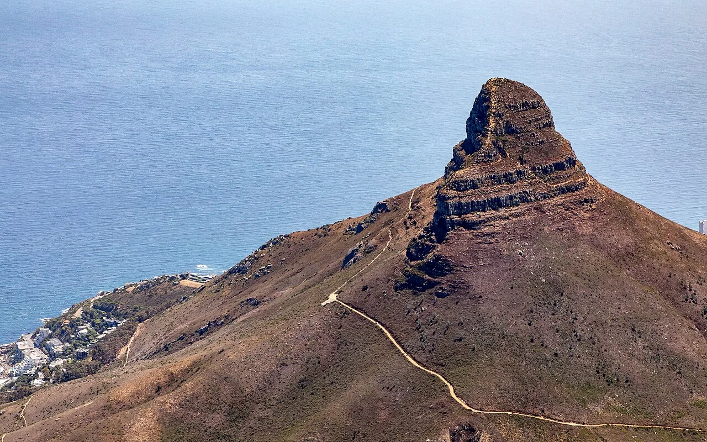
Explore the mountain's hiking routes for views toward Table Mountain and the Atlantic coast, choosing an option suited to fitness and conditions.
Dietmar Rabich · CC BY-SA 4.0 . Resized as needed and converted to WebP. No crop.
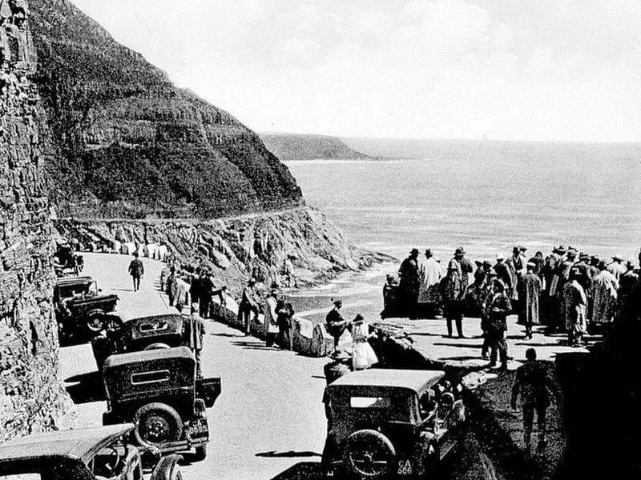
Travel the coastal road between Hout Bay and Noordhoek, stopping at designated viewpoints to appreciate cliffs, bays and the Cape Peninsula.
Unknown author Unknown author · Public domain . Resized as needed and converted to WebP. No crop.
Explore a little further
Cape Town's restaurants and music venues extend the day into evening, while the V&A Waterfront combines dining with harbour views.
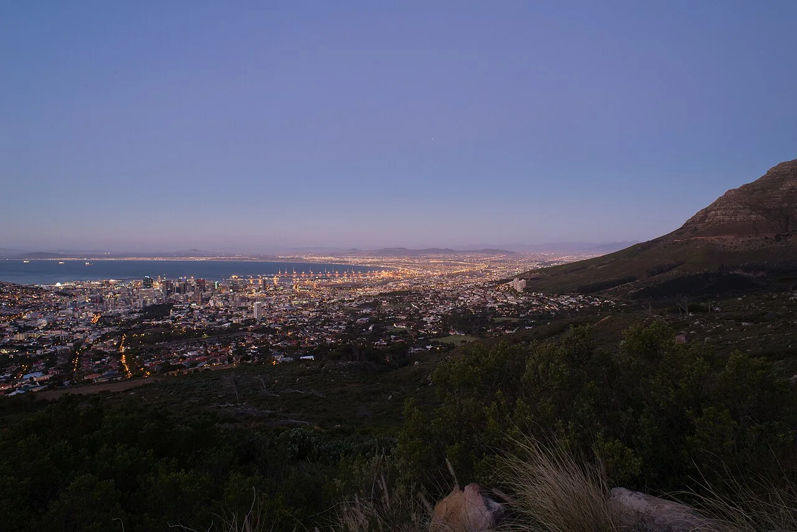
Cape Town at night
Barry haynes · CC BY-SA 4.0 . Resized as needed and converted to WebP. No crop.
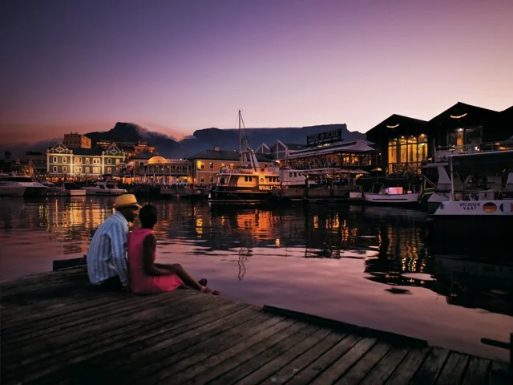
V&A Waterfront
South African Tourism from South Africa · CC BY 2.0 . Resized as needed and converted to WebP. No crop.
Explore a little further
A country overview with selected attraction markers. Use local transport information to plan the route between regions.
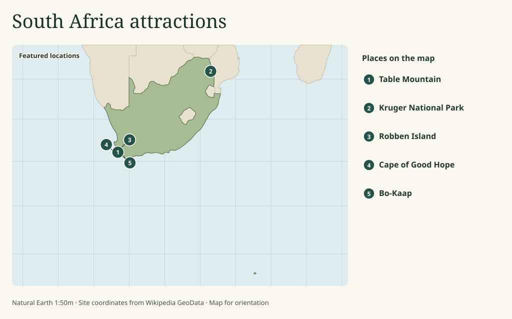
Illustrative overview. Marker locations and map sources are documented below.
A place to settle in
Two places to consider for your trip. Check room choices, current prices and availability directly with each hotel.
Cape Town
A hotel at Cape Town's V&A Waterfront, offering rooms in a historic setting with views of the harbour and Table Mountain from the property.
Check roomsOfficial hotel website · opens in a new tab
Cape Town
Set on a private quay in Cape Town's V&A Waterfront, this hotel has harbour-facing accommodation, restaurants, a swimming pool, and spa facilities.
Check roomsOfficial hotel website · opens in a new tab
The hotel sets its prices, booking terms and payment currency. Some properties confirm reservations after an enquiry.
Know your money
Get familiar with the local currency and estimate what an amount in your own currency is worth.
Daily reference Rates By Exchange Rate API . The rate date appears with your estimate.
Morning to evening · South Africa
Danie van der Merwe from Cape Town, South Africa · CC BY 2.0 . Resized as needed and converted to WebP. No crop.
Daniel Case · CC BY-SA 3.0 . Resized as needed and converted to WebP. No crop.
Jim.henderson · CC BY-SA 4.0 . Resized as needed and converted to WebP. No crop.
South African Tourism from South Africa · CC BY 2.0 . Resized as needed and converted to WebP. No crop.
Suggested order and approximate times, with breaks for meals and travel. Confirm access, reservations, transport and operating hours locally. Evening photographs do not guarantee an event or performance.
Confirm arrangements with the official visitor resource .
Visitor resource: https://www.southafrica.net/
Guide: Atlas & Away · South Africa · researched 18 November 2026.
Explore a little further
A starter in South African English. The pronunciation hints are approximate; listen to local speakers and ask politely when unsure.
| Phrase | Meaning | Say it approximately |
|---|---|---|
| Howzit? | Hi, how’s it going? | — |
| Lekker | Great or enjoyable | — |
| Braai | A barbecue | — |
| Just now | In a little while | — |
| At the robot | At the traffic light | — |
A little preparation
0 of 4 preparations complete
Saved places and checklists use this browser’s local storage. They are not an account or a booking.
Before you go
The example itinerary stays around Cape Town. The full country guide covers several regions; allow extra days and transport for places beyond that route.
Use the Hotels section to open a property’s official website and check rooms, prices and booking terms. You complete any reservation and payment with the hotel.
Open the enquiry page or email profannan712@gmail.com .
Guide researched on 18 November 2026. Text and code were developed with ChatGPT/Codex assistance for this student learning project.
Phrase reference: South African English phrasebook .
Natural Earth (base data), ChatGPT in Codex (map design) · Public-domain Natural Earth base data . Projected Natural Earth boundaries, added labels and site markers, and exported SVG.